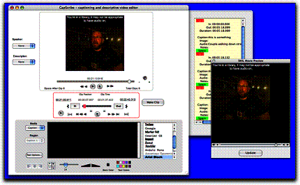
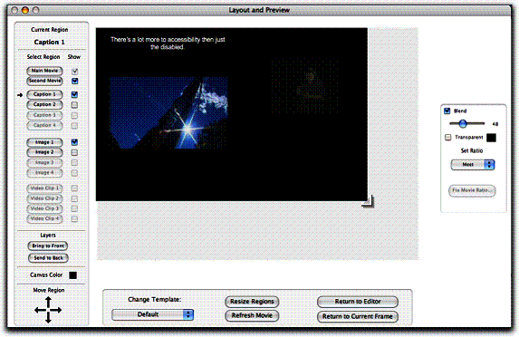

Final Report for the Canadian Culture On-line Program
April 2004
Overview
From December 2002 to March 31, 2004, the CNICE project brought together 12 organizations (representing a range of stakeholders and centres of expertise), a large number of informal collaborators and an advisory panel of prominent consumers, advocates and experts to address the inclusion of people with disabilities in the Canadian cultural exchange (as audience, participants and artists). When we first embarked upon this initiative we did not imagine the complexity and scope of this undertaking. We have since discovered that we have opened a Pandora’s box of challenges and opportunities. We have even identified a new art form. We have uncovered as many questions as we have resolved problems. The discourse and the products of this discourse were far richer, broad ranging and creative than we initially conceived.
Apart from the large number of tangible products, CNICE produced a network of collaborative partners who have benefited from the diverse perspectives, wide range of skills and creativity of the partnership. This productive network will persist and expand well beyond the end of the project. We have also reaffirmed that by making our cultural exchange accessible to people with disabilities we make it more inviting and accessible to everyone.
The Partners
The partner organizations in the CNICE network are:
Adaptive Technology Resource Centre
Banff New Media Institute
Canadian Abilities Foundation
Canadian Centre on Disability Studies
Canadian Cultural Society of the Deaf
Canadian Hearing Society
Canadian Learning Television
Centre for Learning Technology, Ryerson University
Centre for Research in Disability Studies, University of Calgary
Digital Frog International Inc.
Marblemedia Inc.
National Broadcast Reading Service
The Advisory Panel
The members of the CNICE Advisory Panel are:
Jennison Asuncion, Adaptech Research Network
Chris Gaulin, NEADS
Mary Frances Laughton, Industry Canada Assistive Devices Industry Office
Michelle Amerie
John Feld
Gregor Wolbring, University of Calgary
Marcia Rioux, York University
Geoff Eden, Urban & Development Services, City of Toronto
Paul Thiele
Shelley Saunders, Winnipeg Public Library
Carol Yaworski, LDAO
Maroon Tabbal, UCLA
Gary Malkowski, CHS
Please see Appendix A for Advisory Panel biographies.
The Outcomes
The following describes the outcomes or deliverables of the CNICE project. The guideline documents referenced are appended to this report. The software tools are included in the accompanying CDs. The online environments and model content are referenced through a Web address. All of the outcomes or deliverables described can also be accessed through the Web site: http://cnice.utoronto.ca. The outcomes are divided into the following categories.
- Guidelines and Companion documents
- Tools for modal translation
- Tools for Accessible Online Collaboration
- Model Content or Learning Material
- Meaning Equivalence Research
- Implementation and Evaluation
1. Guidelines and Companion Documents
The purpose of the guideline documents is to describe techniques by which online cultural material may be made more accessible to people with sensory, motor and learning disabilities. The guideline documents include a single “core” document followed by four “companion documents,” each devoted to closer examination of particular areas:
- Online Enhanced Captioning
- Online Video Description
- Remote Real-time ASL Interpretation, and
- Representations of Visual Geo-spatial Information.
The core document, General Guidelines for Inclusive New Media Cultural Content, is organized into seven main sections:
Section 1.1 is the introduction to the core document and outlines its scope. This section also includes definition of terms used in the document as well as a brief discussion of disability culture.
Section 1.2 is an overview of existing accessibility principles, of which, developers of cultural content should be aware.
Section 1.3 lays out a number of challenges faced by developers of accessible online cultural content. These include a discussion about the right to artistic expression and accessibility, as well discussions of the aesthetics, entertainment value, perspective and interpretation of cultural works as related to accessibility.
Section 1.4 introduces the concept of modality translations. Aspects of the translation of art are discussed such as emotion, perspectives, presentation, cultural differences and workflow.
Sections 1.5 and 1.6 detail the possible modality transformations and begin the discussion of how translation of cultural content from one modality to another might be carried out.
Section 1.7 is the conclusion of the core document.
The four companion documents follow in the next four chapters. The first companion document, chapter 2, looks at online captioning and details captioning in Flash as well as introduces the CapScribe tool for caption and video description that was developed as part of the CNICE project.
Chapter 3 details Online video description. This discussion extends a discussion that is started in chapter 2 and provides guidance and principles for this modality translation.
Chapter 4 studies in great detail the challenge of creating remote real-time ASL interpretations for cultural events. Along with comprehensive guidelines, the chapter provides first-hand viewpoints and an overview of relevant technologies.
The final companion document, chapter 5, discusses the special case of representing visual geospatial information in alternative modalities. The authors discuss solutions that use SVG as well as VRML. The authors close with guidelines for creating inclusive navigation and way-finding content for the web.
While the guideline documents represent contributions, input and feedback from a broad range of stakeholder groups, it was felt by the partners that further input would be beneficial: to encourage broad buy-in and to insure that no relevant perspectives were excluded. Consequently the guideline documents will be posted on the site as a “public draft” and an online forum will be used to solicit further input and feedback.
The documents will be broadly disseminated to cultural content producers in all sectors (including the government), policy makers and developers of online tools and environments.
2. Tools for Modal Translation
The CapScribe Tool
CapScribe is a tool for creating online captions that supports the use of rich media for captioning as well as an easy method to generate descriptions. The tool combines captioning and descriptions so that new media developers will have access to a single tool to do both.
Currently the features include:
- A flexible text editor for adding captions with a variety of text styles.
- A second caption track that can be used for second language translation or annotation.
- A second video track for providing sign language interpretation.
- A graphics track for providing iconic representations and symbols.
- An audio track and online recording environment for adding video descriptions.
- A way to hyperlink captions to various page pages.
- A method of defining caption and description locations which is fast and easy to implement.
- A layout and preview screen for easy positioning of different media “regions” on the fly.
- Output to SMIL or Quicktime formats for web or desktop deployment.

The following example is the main screen of the editor. It's set to the Caption option
The Describe feature provides an easy method for creating video descriptions from the transcript stage to the recording stage.
The Image feature provides lets authors quickly add graphics and as well, organize graphics and icons thematically.

The Layout and Preview window lets the author arrange and change the properties of a variety of media.
Initial feedback has been positive. The CapScribe editor prototype will be made available for public use shortly after the conclusion of the CNICE project. As the prototype is still evolving, updates will be posted on the CNICE site.
Flash Captioning Tool
http://www.cnice.utoronto.ca/deliverables/flashcap/cctool.zip
Many web developers and designers are moving toward using flash as a video development
tool. Flash enables online video to maintain a high quality without making excessive
bandwidth demands. For users who are deaf, however, the audio track of a flash
video is not accessible unless there is an accompanying caption track. To date,
no captioning tool was available for this video format. The Flash Captioning
Tool developed for the CNICE project enables developers to control the captioning
environment and determine the placement, font size, colour, etc of the captions,
while at the same time not sacrificing user control.
Available through the CNICE site as a free download, the target audience for the Flash Captioning Tool ranges from professional web developers entrusted with encoding video for use on broadcaster websites, to amateur designers and developers looking to caption their flash based home videos.
Deaf Planet (http://deafplanet.com) highlights the quality of the captioning made possible by the Flash Captioning Tool. Developed to accompany the TVO television series Deaf Planet, this web site features numerous videos in which the primary language of interaction is American Sign Language. The videos on the web site have all been captioned using the Flash Captioning Tool, and they illustrate a broad range of color and font combinations currently unavailable within broadcast captioning environments. The Flash Caption Tool’s broader palette of colors styles, positions and backgrounds can be manipulated to match the aesthetic of the video and/or web site. The Flash Captioning Tool also allows designers to use the broader range of style options to convey paralingual information contained within the audio track (things like the speakers tone of voice, background noises or music) by creatively styling the text and background colors of the captions.
While the Flash Captioning Tool is mainly used to add captions to flash based video, extensions to the tool that could allow the inclusion of hyperlinks within captions, multiple caption tracks to run simultaneously, and extend user control over the appearance of the captions are within reach, and could be pursued should future funding be identified.
As it stands currently, the Flash Captioning Tool dramatically increases the possibility of adding captions to flash based video for both professional and nonprofessional captioners and web developers. It is an accessible low-cost captioning solution that is easy to use, flexible and can be easily integrated within a flash video development process. With designers and developers increasingly moving toward using flash as an online video platform, it is imperative that technologies capable of producing captions for the format be widely available. The Flash Captioning Tool meets this need.
LiveScribe
LiveDescribe has been designed to allow near real-time video description for broadcast or web content. This process requires a different approach to video description than the conventional processes because a describer will not have time to prepare a script or even preview much of the material ahead of time. New tools are required to facilitate this type of video description that involves detection and presentation of non-dialog, low volume occurrences in the sound track and to allow the description to extend beyond the limits of those occurrences. Extending the limits must be under describer control and have minimal effect on the video presentation.
The LiveDescribe! system thus performs two main functions:
1) notifies the describer of upcoming silent or low volume occurrences and of the length of time of those occurrences in the video. These occurrences offer an opportunity for inserting a description in real time. In LiveDescribe! silent or low volume occurrences are presented as a series of blocks (indicated in blue) on a white timeline that plays along with the video material (see Figure 1).

Figure 1: Silence indicators that move horizontally as the video progresses
2) automatically pauses the video (extending its running length) to accommodate descriptions that exceed the available silence period. To accommodate descriptions longer than the detected silent periods, the system pauses the broadcasted video so that the describer can finish her/his description. Professional video describers have noted the importance of this feature to provide further and richer descriptions. It also allows describers to be less accurate with the timing of the description and the silence periods, particularly important when there is little or no planning process as in the live description situation. However, video extension cannot be implemented when video is constrained by external time demands such as with television programs.
We predict that the task of describing live will impose a high cognitive demand on the video describer. The video describer must attend to two important main activities: 1) the occurrence and length of silence or low volume, non-dialog periods indicated by the silence period indicator; and 2) the content that must be described. The describer must decide what is important to describe, determine the best or most appropriate aspects of a scene to describe, and then insert the description. All of these tasks must be accomplished as the video content is playing. Describers may have only a few seconds to a few minutes of dialog time to prepare for describing in the silence periods. Research must be carried out to determine how many silence periods can be used and at what frequency they can occur before the describer cannot cope or makes too many errors.
System ease of use is critical in supporting these describer activities because of the high cognitive load imposed by the two main describing activities. We want to minimize any additional cognitive load imposed by the system’s user interface. The system is thus designed using the concept of a single push button microphone giving describer the ability to control the entire process through one button. The button is pressed once to start the broadcasting of the describer’s voice and then pressed again (released) to stop the broadcast (see Figure 2).
Figure 2: Describer control and status indicators
During broadcasting of the describer’s voice, the system monitors the sound level in the source video. If there is sound and the describer has not stopped the description, the source video is automatically paused by inserting frames in it and extended description can continue. Once the describer stops his description, the video continues from the point where frames were inserted. Visually these events appear as a video pause which may be disconcerting for a sighted viewer. Again, research is required to determine the tolerance levels of vision impaired and sighted user pairs for this type of video behaviour.
3. Tools for Accessible Online Collaboration
A-Chat
Available at: http://achat.atrc.utoronto.ca, A-Chat is an accessible browser-based chat program designed to accommodate users with differing access needs. This software serves as a research platform to enable investigation of ways in which common chat features might be made more accessible. The key features of A-Chat are:
- Administrator Settings include:
- Language
- Transcript
- Message/Chat/User ID lifespans
- Public or private user list
- Hands-up mode in which a moderator controls the “floor”
- User can login to an existing account or automatically start a new one.
- Accessibility related preference options are provided:
- Option to play sound effect when a new message arrives.
- Various refresh options, including manual
- Message ordering
- Show only new messages
- Font size, font face
- Colour scheme
- Navigation aids on or off
- Language settings
- Participant list with names linked to participant message history.
- Screen reader friendly page layout.
Screenshots:
The following figures illustrate how individual preferences are set in A-Chat to allow customization of the appearance of the interface and the content.

Figure 3: This screenshot shows one of the A-Chat user preference screens.

Figure 4:This screenshot shows the main A-Chat screen. The message area in on the top-left, the compose message area under it and the options and user list and history areas on the right.
A-Chat can be used to facilitate any number of text-based collaborative activities, including lectures, story-telling, tutorials, discussion groups, and other meetings. Administrative options allow the chat session to be customized according to the level of privacy and user participation desired.
The tool does not currently implement any type of warning system to let the other participants know when someone is still composing a message, so users of the system should remember that some users will take longer to compose and send a message than others. There are several methods for minimizing the chance of conversations changing topic before a person can contribute their message. These include:
- allowing the use of abbreviations
- leaving a reasonable period or getting participant assent before closing a subject
- encouraging users to split long messages into two, with any preliminary messages ending with “…” to make it clear than more is on the way.
- controlling the “floor” either by making use of some informal arrangement or using the more formal (and restrictive) A-Chat hand-raise mode.
A-Chat is capable of producing text transcripts (see administrative options) in the form of HTML documents. Some groups may find it useful to post these files following a session in order to facilitate understanding by users who may not have been able to follow all that was said.
A-Communicator
Available at: http://acomm.atrc.utoronto.ca, A-Communicator (A-Comm) is an accessible client-side Instant Messaging (IM) and Whiteboard tool developed as a research platform for investigating peer description and keyboard accessible drawing. A-Comm utilizes an object-oriented drawing environment, implemented with SVG. This software serves as a research platform to enable investigation of some design features that might ameliorate the accessibility challenges posed by the display and collaborative control of graphics in whiteboards.
The key features of the tool are:
- User can login to an existing Jabber account or sign up for a new one.
- Roster provides “presence” information for contacts.
- Users can participate in private or group chat/whiteboard sessions.
- Text chat window and optional whiteboard
- Participant list on demand.
- A variety of whiteboard drawing tools are available
- Pencil
- Line tool
- Rectangle tool
- Ellipse tool
- Line colour, fill colour, line thickness
- Peer description allows any participant to describe the drawn objects. Anti-collision feature ensures one describer per object.
- Some accessibility related options are provided:
- Option to play sound effect when a new message arrives.
- Keyboard drawing checkbox
- Manual refresh checkbox
- Show only new checkbox
- Newest message first checkbox
- Keyboard enabled drawing lets users use some features of the whiteboard without a mouse.
- Save and open palette feature lets users create and describe pictures beforehand.
The following figure illustrates peer description of images in the collaborative whiteboard space.
Figure 5: An example of a teacher-led lesson using drawings to demonstrate a concept, three students ("Amanda", "David" and "Cathy") submit peer descriptions. The most recently drawn shape, an ellipse has not yet been described.
The peer description tool allows descriptions to be added to as many or as few drawing objects as describers wish. Describers may decide to describe every drawing object on the screen or they may choose to ignore most of the objects and focus on adding higher level descriptions of what is being drawn to just a few choice drawing objects (in the future, object grouping will make this distinction less important).
The benefit of describing every object is that users with visual disabilities will have an in depth picture of the different objects being added to the whiteboard. However, the drawback is that the chat may become cluttered with very repetitive descriptions of low level details (e.g. describing every tiger stripe, etc.), which prevents the description reader from “seeing the forest for the trees”. On the other hand, placing high level descriptions on just a few objects gives the user a better overview, but risks problems if the objects holding the high level description are deleted or re-purposed as part of a different drawing.
The best guidance is probably to use a combination of the two approaches. Use low level descriptions, sparingly, to get across to the description reader the process used to create the picture, but avoid overly repetitive description of repeating features. At the same time remember to use the description of some of the objects for higher level descriptions of the composition as a whole.
In all cases, be careful with your describing. A-Comm does not currently have a method for revising descriptions once they are submitted.
A-Comm allows users to create and re-load batches of pre-authored (and pre-described) drawing objects in the form of SVG files. Additional pre-authored SVG files are also available from the A-Comm website. Note: A-Comm does not support all features of SVG so do not attempt to load SVG files created by other tools.
This feature can be used by anyone on the chat and causes the drawing objects to be placed in addition to any objects already on the whiteboard. Any descriptions of objects in the SVG file will be displayed in the chat. Undescribed drawing objects will be available for peer description. There is also nothing to prevent this feature from being used by people with visual disabilities.
This feature may be useful for the following:
- “Slide shows” or other planned presentations
- Standardized drawings (e.g. flow charts, organizational charts, etc.)
- Drawings that include frequently used objects (e.g. company logos, arrows, etc.)
The software is programmed in Java, which enables it to be used on a variety of operating system platforms.
A-Collab
http://prdownloads.sourceforge.net/atutor/ACollab-pwd1.tar.gz?download
Access to the Internet has changed the way we communicate, work and learn together. People are now able to collaboratively author reports, presentations and undertake research while working at a distance. For people with disabilities, access to online collaborative tools is imperative to participating in today’s work and educational environments.
A-Collab is an access standards compliant multi-group Web-based collaborative work environment. A-Collab enables individuals to collaboratively author and edit documents over the Internet accessibly. It provides users with access to a shared document library, which stores relevant research and/or documentation for the project and previous versions of any collaboratively authored documents. The tool also provides users with access to an events calendar, as well as a shared news and announcements area, and contact lists. Finally, A-Collab links all users of the tool together through both an accessible synchronous chat, and an accessible asynchronous threaded online discussion board.
A-Collab represents the only currently available fully accessible collaborative tool, and is therefore an extremely important development for people with disabilities who stand to greatly benefit from the advantages of electronic collaboration. A-Collab is equally appropriate for both business and learning environments, but can also be used to link people across distances for other uses as well. For example, CNICE project administrators, partners and advisory committee members successfully used an augmented version of A-Collab to communicate about project deliverables, and to stay informed regarding project developments during the early stages of the project.
4. Model Content or Learning Material
ScienceMatrix
Windows version:
http://www.cnice.utoronto.ca/deliverables/sciencematrix/ScienceMatrix_Installer.exe
MacOSX version:
http://www.cnice.utoronto.ca/deliverables/sciencematrix/ScienceMatrix_Installer.dmg
MacOS9 version:
http://www.cnice.utoronto.ca/deliverables/sciencematrix/ScienceMatrix.sit
It is hard to make significant contributions to the production of culture without first having access to education. For students with disabilities, access to science education has proved challenging. Teachers are increasingly turning towards developing science skills in their students through using the myriad of interactive science programs available, but frequently these programs pose access issues for students with disabilities. Science software often requires complex graphs, images and interactive modules. Most science programs currently available lack accessible alternatives for audio and visual elements, thereby making this key content unavailable to students who are deaf and/or blind. Often interactive science programs also use point and click navigational structures that require users to be able to operate a mouse. For students with disabilities who require keyboard only access, these programs are virtually unusable.
Digital Frog International has addressed many of these design issues in the development of Science Matrix. ScienceMatrix is a modularized science software available online through the DFI website. Each module of ScienceMatrix has been designed to be tied directly to middle and high school science curriculum requirements, and can be accessed as a separate unit.
ScienceMatrix utilises hands-on interactive exercises and context sensitive definitions to support students in their learning. All functionality within ScienceMatrix has been designed to be accessible to all students, regardless of ability. ScienceMatrix incorporates full self-voicing text-to-speech, and provides audible descriptions for every image. It also ensures access for students who are deaf by including captions for all video based content. Finally, ScienceMatrix is fully keyboard accessible, to the extent that even students using single switch access technology can also fully access all elements of the program.
In December 2003, DFI was presented with a World Summit Award for the Best in E-Content for Science Matrix, an online accessible science-based learning resource developed as part of the CNICE project. The prestigious award was presented to DFI at a gala in Geneva in early December as part of the World Summit on the Information Society 2003. This award speaks to the high degree of innovation and creativity inherent in DFI’s e-content, and recognizes them as a world leader in this field. More information about this award can be found at http://www.europrix.org/wsis-award/
ScienceMatrix provides accessible science education to students with disabilities that can be accessed anytime by anyone over the Internet. More significantly perhaps, it also sets the standard for the development of accessible online educational tools by serving as an exemplar of what can be accomplished when issues of access are considered central to the development process.
CLT Broadcast Videos
CLT produced and edited two 1/2 hour broadcast videos about the CNICE project during the Banff Centre’s Interactive Screen Conference in July. Part I addressed the challenge of modality translation. Part II of the program outlines how technological convergence can enhance accessibility to culturally oriented learning objects and can promote a greater sense of inclusiveness for Canadians with disabilities. Both will be broadcast on Canadian Learning Television. The program will be repeated on CLT during the next quarter. The programs will also be digitized for online distribution on the CNICE website.
The national broadcast of the program widens the public awareness of the goals and objectives of CNICE and draws attention to the importance of further research and development in this area.
Disability Rights in Canada: A Virtual Museum
http://www.disabilityrightsmuseum.ca/
It was an important moment in 1970 when disability rights were added to section 15 of the Canadian Charter of Rights and Freedoms. Up until that point, it was not illegal to discriminate against a person with a disability simply because he or she was disabled. The specific events leading up to the changes to the Charter are important to know and remember for both Canadians with and without disabilities alike.
It is somewhat ironic that museums themselves may not always prove to be particularly accessible to people with disabilities. Visitors to a museum may have to contend with access barriers inherent in the building’s design. As well, visitors who are blind and or deaf have limited access to those componants of the musuem that rely on sight and/or hearing to convey information within an exhibit.
Disability Rights in Canada: A Virtual Museum is therefore intended to provide Canadians with a rich retelling of the stories of the individuals involved in the campaign to alter the charter. It includes artefacts and archival records connected with the movement as a way of engaging the viewer with the struggles, fears, hopes and dedication of those involved in their fight to be recognized as equals under the human rights laws of Canada. Content for the museum is being developed by the Canadian Centre on Disability Studies (CCDS) at the University of Winnipeg. CCDS is recognized as international leaders in the field of disability studies and have drawn upon considerable expertise in their development and selection of appropriate images, artifacts and personal stories for inclusion in the virtual museum.
Disability Rights in Canada: A Virtual Museum has a number of advantages over traditional museums. As it is available over the Internet, the museum can be visited by anyone, at anytime, who has a computer and an internet connection. Unlike traditional museums, exhibits within the virtual museum have been designed to be accessible to all regardless of ability. Visual elements in the exhibits include text-based descriptions which can be accessed by individuals who are blind. Audio elements within the museum are accompanied by captions for deaf and/or hard of hearing users accessing the exhibits. Navigation through the site is possible using keyboard only access; an important consideration for users of the site with physical disabilities. Through these and other innovative design features, people with disabilities are free to interact with and explore a rich repository of information about the development of disability culture in Canada.
They say that those who fail to understand the past may be doomed to repeat
it. Disability Rights in Canada: A Virtual Museum is an important step in ensuring
that people with disabilities retain their hard won successes in the fight for
disability rights in Canada.
5. MERLO
The MERLO (meaning equivalence reusable learning objects) project (http://merlo.rcat.utoronto.ca) builds on meaning equivalence theory to develop an assessment method that probes the individual’s deep comprehension of the content material based on their judgements about the surface similarity and meaning equivalence of statements. The tests are scored to provide both a global score and a partial score that includes information about correct answers and incorrect selections. This method of assessment is particularly useful for individuals who are being tested in a second language and individuals who have learning disabilities because it probes knowledge through multiple representations of an object. The scores reflect where a student is making connections of meaning as well as where they are making incorrect judgements. During the CNICE project, MERLO were developed for assessment of ESL Spatial prepositions and for Canadian Architecture History. The assessments were used in educational settings at Ryerson University and George Brown College. Initial results lend support to claims that
- MERLO enhance learning outcomes not only by helping instructors to focus on conceptual knowledge, but also by providing learners with feedback from self-tests that is immediate, accurate, detailed, and focuses on 'soft conceptual spots' in need of reinforcement and remediation.
- In lively follow-up class discussions that focus on meaning, the roles of instructors and students are often switched; building blocks of concepts are described, analyzed, and clarified.
- ME/RLO provide valuable diagnostic information regarding difficulties in understanding aspects of English text by ESL and reading disabled students;
- MERLO is effective across different populations of instructors and learners and across disciplines.
- MERLO is technologically scalable.
The MERLO project developed algorithms for creating meaning equivalence assessments and these algorithms can be used in any field of study.
6. Theme: Training, Education, Mentoring and Evaluation
Full participation in culture-building is reliant upon opportunities to build skills, gain knowledge and share experience. For example, artists usually work hard at their craft: they practice the requisite skills, learn about techniques and concepts in their field and work with other artists to contribute to the development of their field and own style. These same kinds of activities are important to individuals participating in construction of a cultural identity or participating in culture in more general ways. Naturally, any movement to make culture and culture-building accessible must include these kinds of opportunities to train, learn and collaborate.
CNICE included several projects that enabled individuals with disabilities to participate in culture through online technologies. Canadian Abilities Foundation (CAF) worked in this area in three ways: 1) development of Access Guide Canada, 2) networking to develop artist mentoring opportunities and 3) hosting of an online version of the Connections Gallery exhibit. The Canadian Hearing Society (CHS) and Canadian Cultural Society of the Deaf (CCSD) collected individual stories and experiences at the Summer Institute of the World Federation of the Deaf 2003 Conference. The Centre for Research in Disability Studies (CRDS) developed two networks that enabled participants usually excluded from online activities to learn about online technology to collaborate and communicate with other participants.
Project Summaries
Following is a description of project activities and achievements over the course of the CNICE project.
Access Guide Canada
The mandate of Access Guide Canada is to provide information about accessible place, events and venues across Canada. As part of CNICE, focus was placed on development of the entertainment listings. Individuals who visit the Access Guide Canada web site (www.abilities.ca/agc), are able to conduct searches by community to learn about the accessibility of an event or to add an accessibility rating or information about an event/venue. A check of the entertainment listing would provide the individual with information about accessible live music, theatres, galleries and museums in addition to other forms of entertainment. Individuals, particularly those with disabilities are encouraged to continue to upload information about accessibility in their community to the database. This ongoing growth in knowledge about accessible cultural events enables individuals who are travelling to new regions or staying close to home to plan activities that will be inclusive for them and to reward organizations and organizers who make their sites and events accessible. Access Guide Canada will continue to grow and develop on the EnableLink site now that CNICE has come to an end.
Arts Mentoring Opportunities
As part of its CNICE work to develop training and mentoring opportunities, CAF, increased the listings of the Arts section on the EnableLink website. The EnableLink art section menu points to a list of 62 articles written on arts and disability, three external links, a listing of twenty-eight disability organizations concerned with the arts, and ten links to international disability and arts organizations. This section also features a chat room and a message board. Both of these have been implemented to encourage collaboration and mentorship between individuals around matters related to disability and arts. Additionally, CAF used opportunities such as the Abilities Festival Connections event and partnerships in CNICE (e.g. Banff New Media Institute) to gather contact information from artists willing to mentor other artists who have disabilities. This documentation will be used to populate the database for an online system that will enable learners and mentors to be matched.
Connections Exhibit & Online Gallery
As part of the Abilities Festival, CAF hosted an exhibition of work by disabled artists at a Toronto Gallery. Attendees were surveyed about accessibility of the event, their interest in online galleries, and their willingness to be mentors. From this exhibit, an online exhibit of the works (many now sold to private collectors) was created (www.enablelink.org/abilitiesfestival). The online gallery contains accessible information about the art work and the artist. The next step planned for the gallery will be to include modality translations of the works based on guidelines developed in the CNICE project.
Deaf Summer Institute
In collaboration with other CNICE partners, CHS participated in the Deaf Summer Institute at the 2003 World Federation of the Deaf World Congress in Montreal. Young people who are deaf conducted interviews with other congress participants and gathered content such as jokes and stories that speak to the collective cultural identity of individuals who are deaf. This material has been made available on the web at www.aslpah.ca. This extraordinary site uses mini-movies to create ASL links and utilizes icons that are relevant to the deaf signing community. English is also provided on the site so that hearing individuals are also able to share in this expression of deaf culture. For individuals who are deaf, this site represents a leap into online culture-building in that it acknowledges and stems from deaf culture, a vibrant culture that is often neglected relative to other cultural identities from the hearing world.
Family Voices Leadership Network
The Family Leadership Network is a composition of five smaller networks distributed among several Alberta locations. The network participants are parents of developmentally disabled children. During the course of the CNICE project, participants were provided high speed connections, conferencing tools, technical support and training on the technology and tools provided. The goal was to facilitate communication and networking among this group to help build a sense of community and shared experience amongst participants. Additionally, CRDS wanted to create an environment where individuals could mentor each other. This network was also planned as a test bed for tools and concepts developed in the CNICE project. However, this plan was abandoned out of concern that problems inherent in beta soft-ware would be off-putting to this group of new computer users and interfere with growth of the network interactions. This decision turned out to be a wise choice since other technical issue inhibited the network growth through much of the project. In order to further encourage this network, participants will have continued access to the communication tools for at least two months after the close of the project. Additionally, participants will have access to CNICE collaborative tools developed during the project and made freely available on the CNICE website.
Treaty Seven Disabled Community Network
The Treaty Seven Network goal was to work with the Disability committee providing computer literacy and basic productivity skills in preparation for the committee taking on a community education project. This network for Treaty Seven disabled members is especially important due to the wide geographical distribution of its members, and the lack of available technology for special needs accessibility. During the CNICE project, a network was established and the instruction and technology required for basic computer use was provided. These activities were the first step in a longer process to allow information exchange, training and mentoring to widely dispersed native persons with disabilities that will continue after the end of the CNICE project.
This network was a great success and has generated interest from disabled groups
in other Treaty communities. One success of the project has been the GPS-based
mapping of two communities (Calagary & Pikani) showing cultural and educational
landmarks. These maps will include links to video material that will be made
fully accessible using the CapScribe tool developed by CNICE partner Ryerson
University. This network was also used to test accessibility concepts and software
strategies developed by CNICE partner Digital Frog International. Computer productivity
training provided as part of the CNICE project and community cultural mapping
will continue in these communities after the close of the CNICE project.
7. Evaluation Work
Several evaluations were conducted during the CNICE project. Many of the iterative evaluations were carried out individually by project partners or in consultation with the ATRC. These evaluations provided information about accessibility concepts, existing attitudes in the arts and new media community and tool usability. All of these evaluations were used to inform tool development, guidelines development and project goals. Evaluations included participants from the CNICE Advisory Panel, artists, producers, developers and consumers. A summative evaluation of the project was also carried out to determine how well the network met specific success markers and facilitated communication amongst partners. The results of this evaluation are presented in the following section.
CNICE Summative Evaluation
The CNICE summative evaluation began with collaboration amongst the partners at the start of the project to establish project success markers. These markers were partnerships, communication opportunities, consumer participation, project implementation and dissemination and meeting deliverables. The evaluation involved an online survey that was distributed to all CNICE partners. Twenty individuals submitted responses; seven were researchers, five were project coordinators and the rest had other roles.
Partnerships
In this project, we wanted to create a true network where partners exchanged ideas, utilized each other’s expertise and began further collaborations outside of the original project. Only one of the respondents indicated that he/she did not consult directly with another CNICE partner. Of those who did, 7 consulted with 9 or more individuals from partner organizations and 8 consulted with 4-8 individuals. Of particular note is the report by 19 of the respondents that they integrated tools or suggestions made by other CNICE partners into their projects. All of the respondents indicated that the connections they made through CNICE were useful and 19 intend to maintain these connections after the close of the project. Indeed, 13 of the respondents indicated that they had formed new project partnerships with a CNICE partner. Collaboration is critical to address effectively the multi-faceted challenge of creating accessible online culture. CNICE has shown itself to be a true network in which the collective skills and knowledge are greater than the sum of its parts.
Communication
Similarly, communication amongst Network projects was critical for the overall success of the project. Of the 20 respondents, 15 indicated that they communicated with partners at least on a monthly basis and of that group, 9 communicated with partners on a weekly basis. These frequent communications enabled the partners build the generated guidelines from a collective knowledge space. The project utilized four main communications methods: web site, online forums, chats, face to face meetings. The weekly chats and face to face meetings were rated the most favourably by CNICE partners. The least favourite form of communication was the web site which indicates that the partners preferred active forms of communication over static forms.
Consumer Participation
CNICE partners were particularly concerned with having a participatory design model and encourage this approach in the developed guidelines. This approach acknowledges the design wisdom to be gained from multiple sources, especially from consumers or target users. Figure 6, indicates the multiple ways that network projects involved consumers.
Implementation & Dissemination
Numerous service gaps were identified by network partners. Of these gaps, six partners reported that they were able to address all of the gaps they identified while 8 partners addressed some of the gaps. Only one partner reported that they did not address the gap they had identified. Respondents reported that they were able to include consumer opinion and advice from the outset of their projects and throughout an iterative design process. Partners indicate that they have begun to disseminate project results through conferences, speaking engagements, academic papers, web sites, news media and other channels.
Evaluation Conclusion
The CNICE project functioned as a network should: partners worked collaboratively, project directions and designs were influenced by these collaborations and ongoing partnerships and connections were made. Functioning networks are vital to the development of wide reaching concepts and guidelines such as those developed in the CNICE project. Even amongst like-minded organizations, it can be difficult to maintain lines of communication once project task demands increase. CNICE partners attended weekly online chats and used these chats as a forum to discuss issues, to discuss new developments or achievements, to share tools and to strategies on shared deliverables. Finding the best mode for communication amongst a network was critical.
Performance Indicators
Indicators of Inputs
Project funds provided by the CCOP
Project funds provided by the funded organization:
Project funds (cash or in-kind) provided by sources other than the CCOP or the
funded organization (including the name of the funding source)
Total administration costs:
Number of Patents filed and/or licenses obtained
Percentage of projects completed capable of moving to the next phase of the
development process
Number of newly created learning materials by theme made available online as
a result of network research (% in both official languages)
Number of third party contracts
Indicators of Outcomes or Project Impact
Short description of target audiences and planned distribution
Satisfaction of audiences/users as to the accessibility and quality of the digitized
content
Number of employment opportunities and/or professional development opportunities
created as a direct result of network research activities
Description of anticipated medium to long term impact on the Canadian cultural/New
Media sectors
Number of spin-off companies
Conclusion and Future Directions
The Canadian Network for Inclusive Cultural Exchange (CNICE) brought together consumer groups and researchers in the field of inclusive design to create guidelines for making Canadian cultural content on-line accessible to people with disabilities. CNICE also produced tools and environments needed for inclusive cultural exchange on-line. However guidelines are only as valuable as their implementation. An initiative is required to broadly publicize the products of CNICE and engage artists and content producers in applying the guidelines, tools and environments as a framework for innovation. The project will encourage producers of cultural content to expand their notion and definition of “the audience” or “the user” to include members with a broad range of abilities, thereby also expanding their art-form.
Accessible design as an afterthought or add-on is costly and frequently appears contrived or poorly connected. Partners within the project will collaborate to integrate inclusive design into the workflow of on-line cultural content production, from the initial design stages and throughout the process.
One issue, identified in the CNICE project, that requires further research is the issue of creating accurate equivalent alternatives. To provide access to rich media, the message conveyed in a modality that is inaccessible to certain audience members, is interpreted into an alternative modality. This includes creating captions or sign translations for people who are deaf or hard of hearing and creating audio descriptions for people who are blind. This is a relatively straightforward process when the content is educational or purely informational. The same cannot be said for cultural content. Art, whatever form it takes, cannot be a solitary or constrained activity. The perception, thoughts and emotions of the audience are as much the artist’s medium as the paint, the music or the dance. As such it is an unpredictable medium influenced by the myriad of experiences and the cultural contexts of the viewer. If we add interpretation from one sensory modality to another to this complex mix of interactions we can strive to provide an accessible equivalent interpretation but we can never truly achieve this. This is not a bad thing, nor does it mean that we cannot hope to provide equal access in the arts. It spurs us to explore our perceptions, our points of view and the great diversity of the human experience as well as the core elements that we all share. We come to realize that there is no equivalency, no uniform perception or interpretation among audience members who have no disability. This diversity can be seen as an asset, not a deficit. CNICE participants felt that the question is not how can someone with a disability have the same experience but how can the experience of someone with a disability be as rich and evocative as the experience of the individual without a disability. A related question is how can the person with a disability feel they have shared in the collective experience of the artwork or performance? Through InCNet the partners will develop models of best practice that respond to these questions in the various on-line media.
Appendix A: Advisory Panel Biographies
Michelle Amerie
Michelle Amerie is involved in a number of programs advocating disability pride.
Royal Bank Financial Group, the Canadian Abilities Foundation, Multiple Sclerosis
Society of Canada are just to name a few. She is the Co-Chair of the Disability
Issues Committee for the City of Toronto. She promotes inclusion and active
living lifestyles for Canadians with disabilities by facilitating communication
and collaboration among organizations, agencies and individuals.
Jennison Asuncion
Jennison Asuncion is a Project Manager at the BMO Financial Group Institute for Learning in Toronto, the corporate university that supports the learning and development needs of the Bank’s 33,000 plus employees. Currently, his accountabilities include participating in the coordination of an initiative involving seven interconnected projects focused on technology and process change, and developing e-learning standards that include best practices around accessibility for employees with disabilities. Jennison holds a second job as Co-director of the Adaptech Research Network (www.adaptech.org) at Dawson College in Montreal. Now working virtually, he continues to conduct and publish empirical research in fields such as the use of computer technologies by Canadian postsecondary students with disabilities. Having spent three terms on their Executive, Jennison now volunteers as the Web Site Manager for the National Educational Association of Disabled Students (www.neads.ca). There, he helps develop initiatives that leverage the Internet for advocacy and information sharing by college and university students with disabilities. For his cross-disability advocacy work in the area of access to postsecondary education and employment, Jennison has been recognized by such groups as the Council of Canadians with Disabilities, the CNIB Gretzky SCORE Program and Concordia University. Jennison holds a Master’s in Educational Technology from the afore mentioned university.
Geoff Eden
Geoff Eden attended Brock University for a B.A. in psychology and history.
Geoff commenced a 20 year career with the CNIB, beginning as a teacher of home skills, moving to administrating a district office, on to managing employment and training, and finally opening and managing the Technical Aids center.
In 1991, Geoff left for employment with the City of Toronto, coordinating the ACPD (Action Committee For People With Disabilities), subsequently moving to a position in the Urban Development Services Policy and Research division as their accessibility planner. The current task there is insuring the new Official Plan for the amalgamated city does not overlook an aging population and others with special needs.
Currently, Geoff serves on the board of the National Broadcast reading service, and in the Fall of 2001 that group's hard work won 2 hours per week of "described Video" of prime-time Canadian productions per week as a condition of license renewal for 3 Canadian networks.
Geoff has also served on the board of Balance a central Canadian training programme
for adult blind people, and I continue to chair the Visual Aids Evaluation Group
for ADP, a consumer testing programme which confirms that devices/software performs
as advertised in order to qualify for ADP funding.
Chris Gaulin
Website Architect, NEADS
Chris Gaulin is NEADS' Website Architect and lead CampusNet Project Consultant. He has brought tremendous skill and commitment to his work developing www.neads.ca, a highly informative and accessible resource for students and graduates with disabilities.
Chris provided outstanding onsite support to delegates during our 2000 national conference. Chris is now providing ongoing support in reviewing the Association's publications and research.
Currently studying at Dawson College in Montreal in a pre-university Commerce
program, he is also extremely involved with a number of disability organizations.
Chris is also the Representative for Students with Disabilities on the Executive
Council of the Dawson Student Union.
John Feld
John Feld is a long time activist, freelance writer and facilitator within the disability community. John also has a well-defined personal network surrounding disability and the arts - and in fact, is the creative inspiration and founder of the Abilities Festival series which the Canadian Abilities Foundation is presently in the process of helping to establish.
Mary Frances Laughton
Mary Frances Laughton is the Director of the Assistive Devices Industry Office (ADIO) in Industry Canada. She was formerly the Manager of Industry Canada's portion of the National Strategy on the Integration of Persons with Disabilities. The role of the ADIO is to assist in the development of the assistive device industry in Canada by providing strategic business information, bringing companies together in R&D partnerships and identifying strategic business opportunities. The growth in the number of entrepreneurs with disabilities will promote a growth in the need for Canadian developed assistive technology.
Mary Frances, who herself is a person with a disability, serves on the Federal
Interdepartmental Disability Working Group as Chair of the Information and Communications
Technology Group and on the Treasury Board of Canada Secretariat's Internet
Advisory Committee Access Working Group. She is co-chair of the International
Steering Council for the W3C Web Accessibility Initiative (WAI), a member of
the executive of the Canadian Standards Association Strategic Steering Committee
on Community Well-being and Safety, the CSA Technical Committees on Assistive
Technology, Design for Aging and Consumer Standards and the NISO Talking Book
Committee. Mary Frances is a trained chemist turned librarian who has been in
Government just over 31 years. She is Past-President of the Friends of the Ottawa
Public Library and a committee chair on her church council. Mary Frances is
a past president of the Canadian Association for Information Science and has
served on the boards of the Canadian Information Processing Society and the
National Broadcast Reading Service. (March 25, 2003)
Gary Malkowski
Gary Malkowski is Director of Consumer and Government Relations at The Canadian Hearing Society. He is responsible for the coordination of government and consumer relations at the provincial level, as well as oversight of the agency’s employment services program.
Gary has an extensive track record of advocacy work, including his involvement with the Ministry of Education’s Deaf Education Review, the Supreme Court of Canada’s Eldridge case, the Ontarians with Disabilities Act Committee, Educational Support Services, the Federal Employment Equity Act, Bell Relay Service, TTY Network, the Human Rights Code of Ontario, Mental Health Services, the Literacy and Life Skills Program and Sign Language Services.
Prior to joining The Canadian Hearing Society, Gary was the first elected Deaf politician in the world using American Sign Language. During his term as MPP for York East, he was Parliamentary Assistant to the Minister of Citizenship with responsibility for race relations, employment equity and disability issues. He was also Parliamentary Assistant to the Minister of Education and Training. He played a leading role in focusing public attention on important disability issues such as accessibility, deaf education and literacy. He passed a Private Member’s Resolution for a provincial review of visual language interpreting services, intervention services for deaf-blind persons and text-based services for deaf and hard of hearing persons in Ontario. This resolution led to the successful establishment of the College Standards and Accreditation Council.
Gary has presented numerous lectures and received many awards provincially,
nationally and internationally. He has been featured on TV, radio, newspapers
and magazines nationally and internationally, including the BBC and the CBC.
Marcia Rioux
Marcia Rioux holds a PhD in Jurisprudence and Social Policy. She holds multiple positions at York University - Director of the York Centre of Health Studies, Chair of the School of Health Policy and Management as well as Director of the MA (Critical Disability Studies). Her research addresses a broad range of public policy issues including disability and human rights, universal education, the impact of globalization on welfare and disability policy, literacy and disability, disability and discrimination, health policy and social justice issues. Dr. Rioux is internationally known having taught, researched and advised on policy issues in numerous countries including the Americas, Australia, Europe and India. She has been an advisor to federal and provincial commissions, Parliamentary committees, and international NGO's and UN agencies. She is co-director of Disability Rights Promotion International with Mr. Bengt Lindqvist (special rapporteur on disability 1994-2002)
Shelley Saunders
Winnipeg, Manitoba
Shelley Saunders has worked for 28 years as a librarian in the public library sector. Her current position is that of Administrative Coordinator of Targeted Services at the Winnipeg Public Library.
Primarily working with traditionally underserved communities that do not generally use the public library, i.e. people with disabilities, Aboriginal people, Older adults, people with low literacy skills and ESL learner, Shelly’s job is to network and dialog with these various communities to create new strategies and partnerships to change/adapt our library services to better meet the needs of these diverse groups. Shelley then ensures ensure that information is fed back to Library Administration and Library staff to help create new knowledge and sensitivity in serving these clients
Shelley also served on the City of Winnipeg Mayor’s Access Advisory Committee for 10 years. The major focus of this citizen group was to advise the City on how to make all of its services and programs more accessible. As part of this work, Shelley, participated in developing the first Universal Design Policy that has direct impacts on all City Departments.
Currently, Shelley serves on the Canadian Centre on Disability Studies, Disability Information Committee. Shelley’s current activities include the development of an accessible disability issues information network and electronic library
Shelley has also served on a variety of Boards of community based groups including
Bookmates (Family Literacy), Manitoba Multicultural Resources Centre & library
related associations at the local and national level.
Maroon Tabbal
Maroon Tabbal is the Director of Advanced Research Computing, UCLA School of Medicine. Trained as an Architect, from building design to building of Information Technology (IT) Infrastructures, he is a Comprehensive Design Scientist (CADS) currently focusing on Campus IT Research initiatives ranging from Internet 2 (I2) to Bioinformatics. Looking for the irreducible generalised principles, drawn to minimum abstactions and driven by Fuller's Synergetic Geometry.
Paul Thiele
Paul Thiele was born in Poland, and grew up in Germany. He was born totally blind due to congenital cataracts, regained 10% eyesight after a series of operations in Germany, and came to Canada in 1958.
Paul Thiele holds a BA. in Sociology and Literature and an M.A. in Comparative Literature from the University of B.C.
Paul Thiele was Founder and Director of the Crane Library and Resource Centre at the University of B.C. and prior to taking early retirement was Senior Client Advisor, Crane Library and UBC Disability Resource Centre. While at UBC, he also taught courses in Special Education and Library Science.
His many involvements include the B.C. Premier's Advisory Committee for Persons with Disabilities, UNESCO mission to Kenya and Eastern Africa to establish post secondary student support systems for blind and vision-impaired students in Eastern Africa, founding member of the International Federation of Library Association's Committee on Services and Technical Supports for the Blind, 1981 International Year of Disabled Persons federal and provincial organizing committees, and he is currently Chair of the National Board of Directors, VOICEPRINT/National Broadcast Reading Service.
Paul Thiele is currently enrolled in Computer Studies at Vancouver Community College, and is establishing a private consulting/advisory/case management company for blind, vision-impaired and physically disabled persons.
Gregor Wolbring
Dr. Wolbring is a thalidomider; a research scientist at the Department ofBiochemistry and Molecular Biology, Faculty of Medicine, at the Universityof Calgary; an Adjunct Assistant Professor (bioethics) at the Departmentof Community Rehabilitation and Disability Studies, Faculty of Education,at the University of Calgary; and an Adjunct Professor at the JohnDossetor Health Ethics Center at the University of Alberta, Edmonton,Alberta, Canada. He is the founder and coordinator of the InternationalNetwork on Bioethics and Disability--a network supported by theInternational Association for Bioethics--and the founder and director ofthe International Center for Bioethics, Culture and Disability http://www.bioethicsanddisability.org. He wasrecently appointed to the executive of the Canadian Commission for UNESCO.He is also a boardmember of e.g. the ETC group, the Edmonds Institute andthe Canadian Centre of Disability Studies. He works on many bioethicalissues such as Nanotechnology, genetics, end of life decision-making, cognitive sciences and information technology (includingwebdesign)
Carol Yaworski
Carol Yaworski has been LDAO’s Executive Director since 1997, joining the organization with more than twenty years of experience in the areas of child welfare, children’s mental health and HIV/AIDS. Carol is a member of the Minister’s Advisory Council on Special Education and as a volunteer serves on the Board of Directors of Central Toronto Youth Services and international health projects in Russia, Poland and Ukraine.
Carol is responsible for the overall management of LDAO and in supporting the
sixteen member Board of Directors in their governance of LDAO.
We acknowledge the financial support of the Department of Canadian Heritage through the Canadian Culture Online Program


{kind=link}
{kind=link}